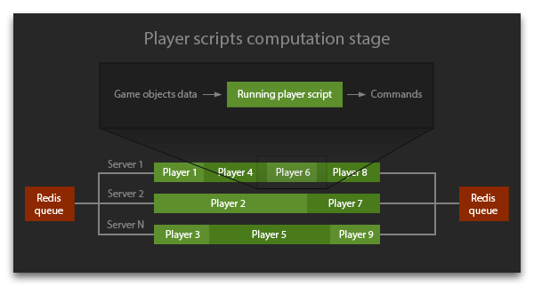
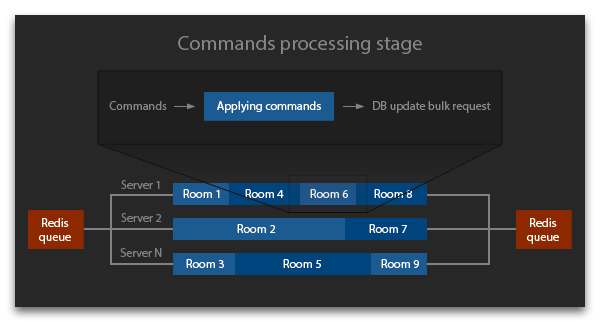
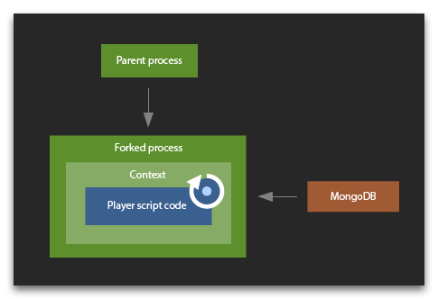

Since Screeps is a game from programmers for programmers, you might possibly be interested in how it works server-side. We, on our part, want to reveal some advanced architectural solutions of this project too.
Key facts
- The techs used on the server side are Node.js 6.6.0, MongoDB 3, Redis 3.
- 20k lines of server side JavaScript code.
- Run-time computations are done in parallel on 27 quad-core dedicated servers on OVH using 108 x Intel Xeon CPU E3-1231 v3 processor cores (with respective number of node instances).
- MongoDB runs on 24-core machine with 128 GB of RAM and handles 30k update requests per second.
- Player run-time code is optimized to work in memory and does not make any hard drive or database requests.
Architectural overview
All the game data is stored in MongoDB. Each game object is a separate database document. It explains the specific view of id property objects which are assigned by the database.
Each game tick is controlled by a special syncing code based on Redis. A tick consists of two stages:
- Player scripts calculation.
- Commands processing.
A larger picture of stages processing flow could look like this:


A task queue is created for each stage. The tasks of the first stage are scripts of all active players, while the second stage deals with game world rooms. The queue is stored as a Redis List, each task being processed separately by a separate machine.
A tick begins with forming a list of all active players which are put into queue for processing their game scripts. All run-time servers receive tasks from the queue, request the DB data the player needs, and launch computation of his or her game script, collecting commands for various game objects. After the queue is up, the second stage commences. All active commands are put into queue, and run-time servers start processing commands for objects in each room.
Though different rooms on the processing stage and different players on the calculation stage are handled separately in parallel, the number of parallel processes strictly corresponds to the CPU cores number. One room and one player are processed synchronously by one core which rules out various race conditions.
After both stages are finished, a certain number of requests for changing game objects in the database is formed. These requests are carried out in bulk after the processing stage is finished. MongoDB 3 uses a new storage engine WiredTiger which due to concurrency on document level allows leveraging the advantages of several parallel threads on the DB server. After the DB change is finished, the whole system switches to the next tick processing.
DB objects updating is the only operation that requires hard drive access. A disk flush is performed only once a minute on the DB server and does not affect run-time servers which do not work with the disk at all (it is absent on them). Run-time servers receive ready data of game objects and the Memory object which are loaded into RAM even prior to the tasks launch. All the useful work is performed by CPU cores of run-time servers which are "rented" by players on the first stage of the tick, i.e. computation stage.
Scaling
The system is designed to allow easy scaling on two levels:
- As the load on the DB increases (i.e. players get more active in the game world), we can either increase the number of CPU cores to work with WiredTiger or add more servers to the database cluster. Since each room is processed separately and independently from other rooms, DB sharding based on rooms works well.
- As the load on the total CPU resulting from players calculations increases, we can just add more run-time servers performing these computations. In a minute after they launch, they can already receive and process tasks from Redis queues.
Script running environment
The Node.js vm library is used when performing tasks on the computing game scripts stage. Each node instance process launches a separate fork that does not have access to its parent process. This fork immediately makes an advance request to the database for the data it needs for calculations. Then it creates a context for the user and executes vm.runInContext. The context is saved in the fork for the future use which allows you to use the global object and require cache repeatedly in your scripts. Also, compilation of the script produces code cached data which is stored and used to speed up later compilations.

Though runInContext is invoked with an execution timeout specific for each player, it is not always able to gracefully finish script execution at certain workload types. If this situation occurs, the whole fork rather than vm is terminated when the time is out. All the players contexts in this process disappear and get re-created from scratch.
For the future, we plan to open-source the code of all the system for you to launch Screeps simulation on your local machine and study it.